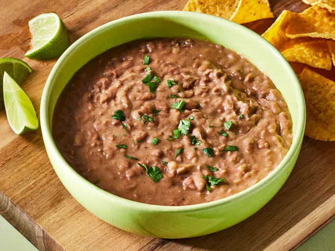

Quick and Easy Refried Beans

Description
These beans are easy to make and delicious to eat. you can serve them with rice or corn.
They serve 6 and take 20 minutes to make
Ingredients
- 2 tablespoons canola oil
- 2 garlic cloves,peeled
- 2 (15 ounce) cans pinto beans
- 1 teaspoon cumin
- 1 teaspoon chili powder
- salt to taste
- .5 lime, juiced
Directions
- Gather all ingredients.
- Heat canola oil in a heavy skillet over medium heat.
- Cook garlic cloves in hot oil, turning once, until brown on both sides, 4 to 5 minutes. Smash garlic cloves in the skillet with a fork.
- Stir pinto beans, cumin, chili powder, and salt into mashed garlic and cook until beans are thoroughly heated, about 5 minutes. Stir occasionally.
- Smash bean mixture with a potato masher to desired texture. Squeeze lime juice over smashed beans and stir until combined.
- Enjoy!
Home